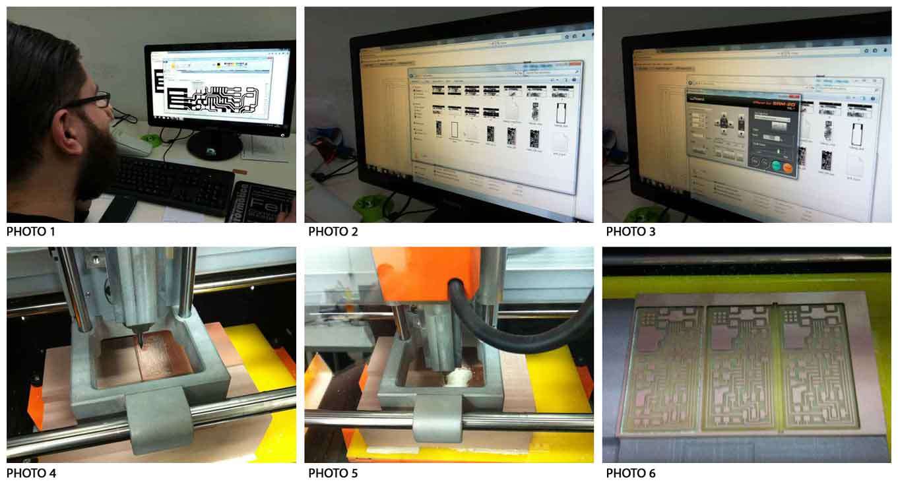
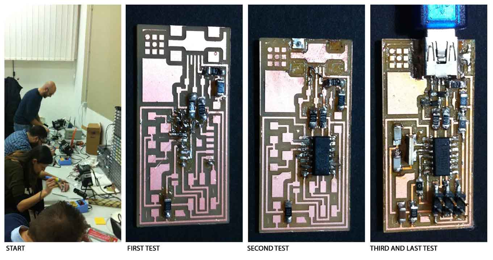
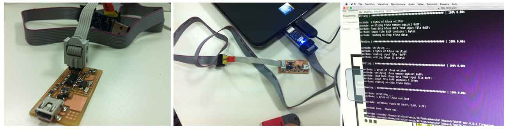

ASSIGNMENT: make the FabISP in-circuit programmer
electronics_production/index.htmlThis assignment is about to make the FabISP in-circuit programmer. The FabISP is an in-system programmer for AVR microcontrollers, that allows to program the microcontrollers on other boards using a USB cable. We will be using this programmer through the semester to program the other boards we create.
hello.ISP.44.cad board components traces interiorTable size (LxP): 232.2 x 156.6 mm
Distance from collet tip to table: 232.2 x 156.6 mm
SETTING MACHINE:
- Open fabmodules.org
- Click on Input Format;
- Choose Image (.png) and Upload Image;
- Click on Output Format and choose the machine (Roland Mill (.rml));
- Setting machine: machine SRM-20; Xmin 0; Ymin 0;
- Click on Process and choose (PCB traces(1/64)) or (PCB outline(1/32));
- Change offset to 5 (this is a personal setting);
- Click on Calculate;
- Save.
In order to mill the board we used the Roland MonoFab SRM20 and the Fab Modules. We placed a sacrifical worktop before starting. I secured the board in the milling machine with double sided tape to keep the model from moving in the milling machine and loosing the 0,0 point.
Instructions:
- Turn on the machine for the heating, at least for 20 minutes.
- Open the Fab Modules on a browser (fabmodules.org) and on the new window selected the endmill settings as 1/64".
- Click on the “load" button and selected the file (.png) and then set the machine type as SRM20. Press calculate. Fabmodules generates .rml file.
- When the machine is ready, open Roland Vpanel. Load the .rml file.
- Set the X,Y,Z axes.
- Now you can mill.
- To cut the board a 1/32th n-mill is needed, change the drill tool to the 1/32" on the Fabmodules.org, and repeat the process.
- Open again Roland Vpanel. Load the new .rml file.
- set only Z origin.
- Repeat the same operation for every file.

Components:
. 1 ATTiny 44 microcontroller
. 1 Capacitor 1uF
. 2 Capacitor 10 pF
. 2 Resistor 100 ohm
. 1 Resistor 499 ohm
. 1 Resistor 1K ohm
. 1 Resistor 10K
. one 6 pin header
. 1 USB connector
. 2 jumpers - 0 ohm resistors
. 1 Cystal 20MHz
. two Zener Diode 3.3 V
. one usb mini cable
. one ribbon cable
. two 6 pin connectors
- I used the FabISP labeled board diagram to understand where to place the components on the board, and so soldered the components on the board.
-The first day I had some problems because my soldering iron did not work properly. On the second attempt I managed to finish the PCB.
- We checked the connections with the multimeter to make sure that power and ground were not connected and there was not a short on the power line. I did the "smoke test". We plugged the FabISP into my computer via the mini USB cable. Then I installed the necessary software for AVR programming.
Once verified the operating of my board, I tried and tried to program it with my Mac, but I failed. I asked Ermanno, a guy of FabLab Frosinone, to use his computer, and I manage to do it using Linux.

Solder first the USB and microcontroller and then the rest. Once soldered these two elements, you can say that the job is done.
Carefully check the microcontroller direction, and the polarity of the diodes. Copper is an excellent tool to remove tin in excess.
{kind=link}
{kind=link}